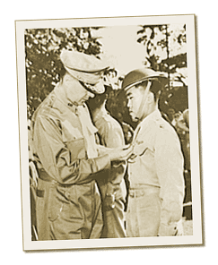

|
j
a v a s c r i p t |
December 22, 1941
Herald: “80 Jap Transports near Lingayen Gulf ... Huge Naval Force Seen off Luzon.” This is it: the Big Invasion! We’ve no navy to intercept them. Our planes are either smoldering wrecks or in hiding whereas Japanese planes now nest in newly captured airfields on our own backyard. Time has run out to equip and train our army. We’ll have to fight with what we have, and we haven’t enough. Knox talked too much and too fast, and so did Pepper. The Japanese acted quickly. From Lingayen to Manila is 213 kilometers of flat terrain. How can we stop them without an airforce?

MacArthur pins the DSC on Capt. Jesus A. Villamor.
Japanese bombers visited us at breakfast and thoughtfully dropped a few eggs on Nichols. Raided yesterday too, were the widely scattered targets of Baler (on the east), Cabanatuan, Batangas, Cebu and Mindanao. Inland from Lingayen, Tayug in Pangasinan was hit but only one plane (probably recon’) bombed San Fabian in the middle of Lingayen coast. The Herald shows MacArthur decorating Lt. Dale and Capt. Villamor with the Distinguished Service Cross. He also awarded a DSC to Capt. Kelly and a Silver Star to Cesar Basa — posthumously for both. The only positive news is that MacArthur may be named head of a Joint Allied Command — a sign of faith in his ability. What’s good for MacArthur is good for the Philippines. Our firm, E. Santamaria and Co., will close. I can remain on a heavy commission basis, but with remittances to the U.S. limited to $500 a month, business is all but dead. Spent the rest of the day in abject wandering, weighing the pros and cons. So far the cons have it. 0130: Sirens are on as more bombs explode while I write this — probably Nichols and maybe Clark. The timing is significant: the intent is to cripple our airforce for the landing at Lingayen. The Herald’s Editorial, no doubt written too early, was a cruel joke: “Things begin to look up.” |
|
|
|
|